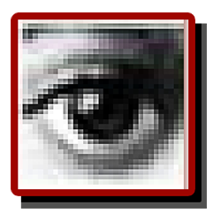

the history of
PHOTOSHOP

1990
Photoshop 1.0
최초버전 제작
 1991
Photoshop 2.0
1991
Photoshop 2.0
채널 추가
윈도우를 지원하는 첫 버전
 1994
Photoshop 3.0
1994
Photoshop 3.0
탭 형식의 팔레트 메뉴 추가
레이어 추가
 1996
Photoshop 4.0
1996
Photoshop 4.0
Adjustment 레이어 추가
액션 기능 추가

1998
Photoshop 5.0
문서편집 기능
다중 실행 취소 (히스토리 팔레트)
색 관리
 2000
Photoshop 6.0
2000
Photoshop 6.0
인터페이스 변경
힐링 브러시
Liquify 필터
픽셀유동화 기능
 2002
Photoshop 7.0
2002
Photoshop 7.0
모든 문자를 벡터로 처리
힐링 브러쉬 개선
그리기 엔진 개선
 2003
Photoshop CS
2003
Photoshop CS
카메라 RAW 2.x
Slice Tool 개선
Shadow/Highlight 메뉴 추가
Match Color 메뉴 추가
Lens blur 필터 추가
실시간 히스토그램
사용자 메뉴 구성
 2005
Photoshop CS2
2005
Photoshop CS2
카메라 RAW 3.x
스마트 오브젝트
이미지 변형(Image Warp)
스팟 힐링 브러시(Spot Headling brush)
적목 현상 교정
소실점
노이즈 감소 기능
HDRI 지원
폰트 미리보기
레이어 다중선택